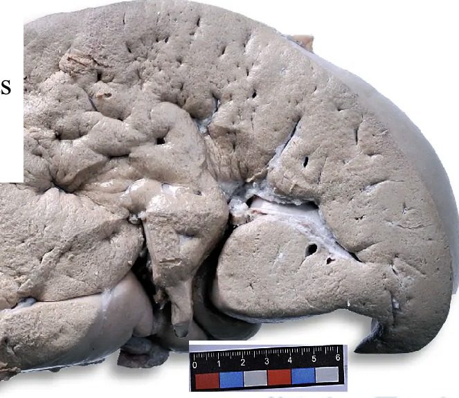
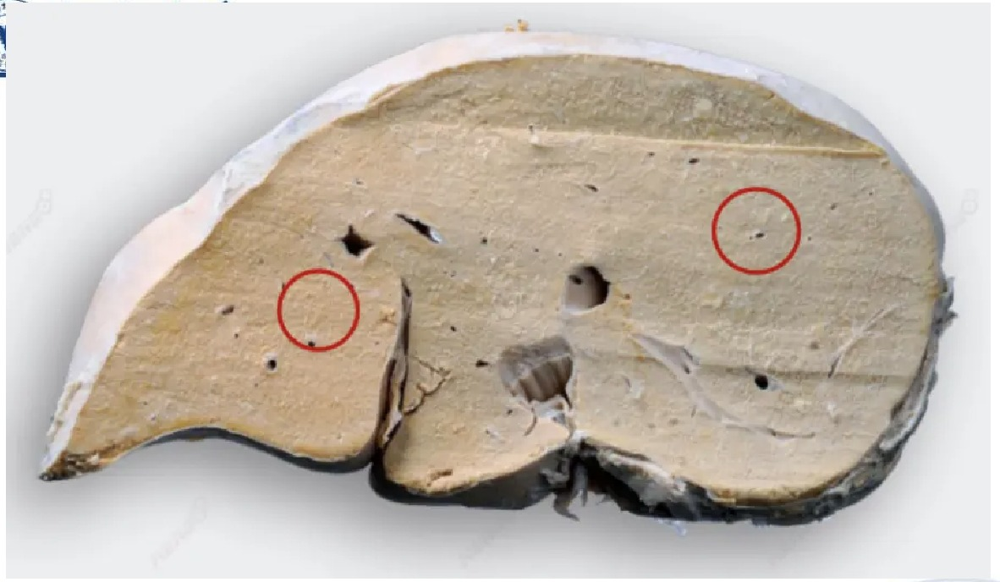
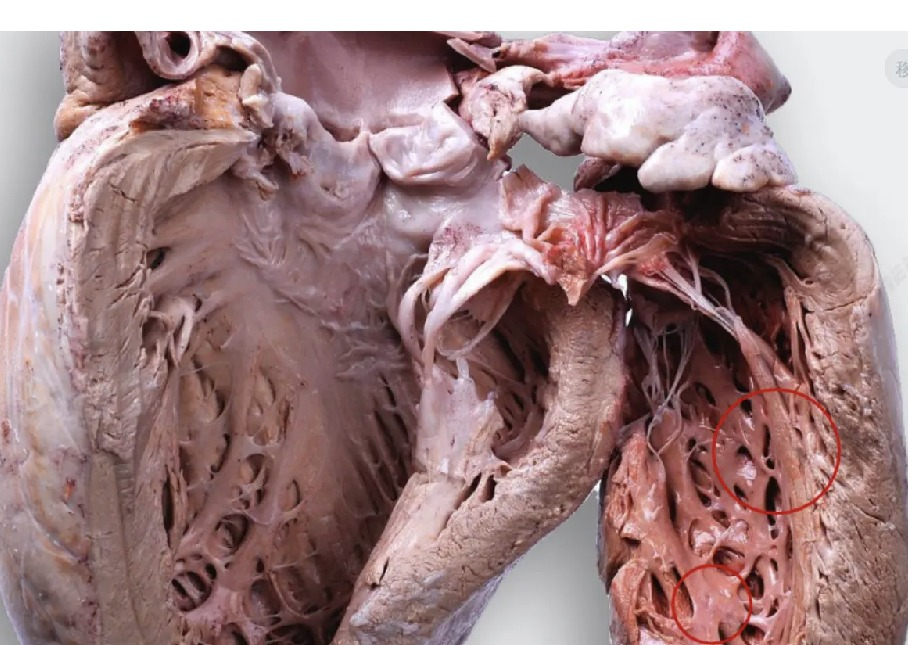
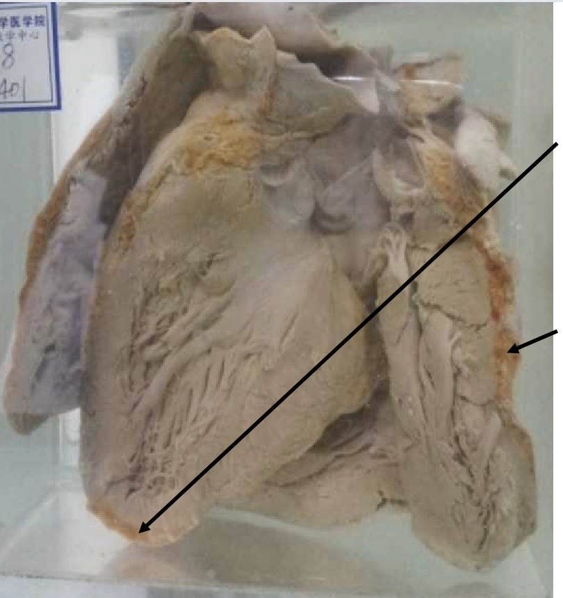
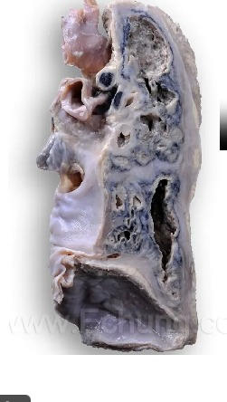
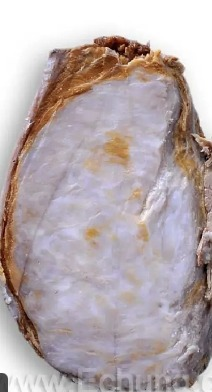
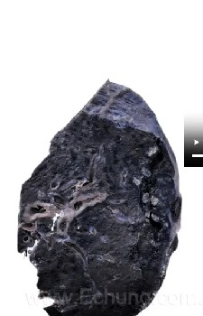

Seven specimens, one card each: what you see, why it looks that way, what to call it, and the sentence to write. Cover everything below What you see and produce the rest yourself — that is the bench task and the exam task, unchanged.هفت نمونه، هر یک روی یک کارت: چه میبینید، چرا اینگونه است، چه نامش بگذارید و چه جملهای بنویسید. هر چه زیر چه میبینید آمده بپوشانید و باقی را خودتان بسازید — همان کار سر میز و همان کار امتحان، بیهیچ تفاوتی.
By the end of this Part you should be able toدر پایان این بخش باید بتوانید
Describe and diagnose all seven gross specimens unaided.هر هفت نمونهٔ ماکروسکوپی را بدون کمک توصیف و تشخیص دهید.
Separate the tigroid heart from the fat heart on sight.قلب ببری را با یک نگاه از قلب چرب جدا کنید.
Explain why a cloudy-swollen liver is pale and a fatty liver is yellow.توضیح دهید چرا کبد دچار تورم کدر رنگپریده است و کبد چرب زرد.
3.1No. 5 — Cloudy Swelling of the Liverشمارهٔ ۵ — تورم کدر کبد
Gross Specimen No. 5 · Gross · demonstration (示教)Cloudy swelling of the liverتورم کدر کبد
What you seeچه میبینید

Fig 3.1 Compare the edge and the colour with Fig 1.1. The margin is blunt and rounded, and the parenchyma is uniformly pale and matt.لبه و رنگ را با شکل ۱.۱ مقایسه کنید. حاشیه کند و گرد است و پارانشیم بهطور یکنواخت رنگپریده و مات.
The liver volume increases and the capsule is tense.حجم کبد افزایش یافته و کپسول کشیده است.
The liver margin is noticeably dull and round — the normal sharp edge has gone.لبهٔ کبد آشکارا کند و گرد شده — لبهٔ تیز طبیعی از بین رفته.
On the cut surface, the capsule at the edge is inverted, the parenchyma is significantly elevated, and the portal tissue is relatively sunken.در سطح مقطع، کپسول لبه برگشته، پارانشیم بهوضوح برجسته و بافت پورت نسبتاً فرورفته است.
The parenchyma is pale in colour and has lost its normal lustre, resembling boiling water.پارانشیم رنگپریده است و جلای طبیعی خود را از دست داده، شبیه آبِ جوشیده.
Why it looks like thatچرا این شکلی است
Every feature is a mechanical consequence of hepatocytes taking on water (§2.2).Billions of cells each a little larger add up to a larger organ; the capsule, which cannot stretch to match, becomes tense, and the sharp edge is pushed outwards into a blunt curve. When the organ is cut, the swollen parenchyma is under pressure and bulges out of the plane of section, dragging the cut edge of the capsule over with it (the “inverted” capsule) — while the portal tracts, which are fibrous and do not swell, stay behind and therefore look sunken. The pallor is compression of the sinusoids by the swollen cells, squeezing blood out of the tissue. The loss of lustre is the granular, dilated organelles scattering light instead of transmitting it — which is exactly what makes a poached egg white opaque, and exactly what the phrase “resembling boiling water” is describing.هر ویژگی، پیامدی مکانیکی از آبگرفتن هپاتوسیتهاست (بخش ۲.۲).میلیاردها سلول که هرکدام اندکی بزرگترند، جمعاً عضوی بزرگتر میسازند؛ کپسول که نمیتواند همپای آن کشیده شود تحت کشش قرار میگیرد و لبهٔ تیز به بیرون رانده و به خمیدگی کند بدل میشود. هنگام برش، پارانشیم متورم تحت فشار است و از صفحهٔ برش بیرون میزند و لبهٔ بریدهٔ کپسول را با خود میکشد (همان کپسول «برگشته») — در حالیکه مجاری پورت که فیبروزند و ورم نمیکنند، جا میمانند و بنابراین فرورفته بهنظر میرسند. رنگپریدگی، فشردهشدن سینوزوئیدها توسط سلولهای متورم و بیرونراندن خون از بافت است. از دست رفتن جلا، پراکندن نور توسط اندامکهای دانهدار و متسع بهجای عبوردادن آن است — دقیقاً همان چیزی که سفیدهٔ تخممرغ آبپز را کدر میکند، و دقیقاً همان چیزی که عبارت «شبیه آبِ جوشیده» توصیفش میکند.
Pathological diagnosisتشخیص پاتولوژیک
Cloudy swelling of the liver (cellular swelling / hydropic change)تورم کدر کبد (تورم سلولی / تغییر هیدروپیک)
Write it like thisاینگونه بنویسید
Organ: Liver. Description: The liver is increased in volume and the capsule is tense. The inferior margin is blunt and rounded rather than sharp. On the cut surface the capsular edge is inverted, the parenchyma bulges above the plane of section, and the portal tracts are relatively depressed. The parenchyma is diffusely pale and has lost its normal lustre. No nodularity, fibrosis or focal lesion is seen. Diagnosis: Cloudy swelling of the liver.عضو: کبد. توصیف: حجم کبد افزایش یافته و کپسول کشیده است. حاشیهٔ تحتانی بهجای تیز، کند و گرد است. در سطح مقطع، لبهٔ کپسولی برگشته، پارانشیم از صفحهٔ برش بیرون زده و مجاری پورت نسبتاً فرورفتهاند. پارانشیم بهطور منتشر رنگپریده است و جلای طبیعی خود را از دست داده. ندولاریتی، فیبروز یا ضایعهٔ کانونی دیده نمیشود. تشخیص: تورم کدر کبد.
3.2No. 6 — Fatty Degeneration of the Liverشمارهٔ ۶ — استئاتوز کبد
Gross Specimen No. 6 · Gross · HOMEWORKFatty degeneration of the liver (hepatic steatosis)استئاتوز کبد
What you seeچه میبینید

Fig 3.2 The cut surface is uniformly yellow. Put this beside Fig 3.1: same enlarged organ, same blunt edge, entirely different colour — and that colour is the diagnosis.سطح مقطع یکدست زرد است. این را کنار شکل ۳.۱ بگذارید: همان عضو بزرگشده، همان لبهٔ کند، رنگی کاملاً متفاوت — و همین رنگ، تشخیص است.
The liver is enlarged, the edges are obtuse (blunt and round), and the capsule is tight.کبد بزرگ شده، لبهها کند و کپسول کشیده است.
The surface and the cut section are both yellow — described on the specimen card as grayish yellow.سطح و مقطع هر دو زرداند — روی کارت نمونه زرد-خاکستری توصیف شده.
The cut surface has a greasy feeling to the touch.سطح مقطع در لمس، چرب است.
The texture is soft and light.قوام نرم و سبک است.
Stained with Sudan III, the liver turned orange-yellow — positive for fat.با سودان III رنگآمیزی شد و نارنجی-زرد درآمد — مثبت از نظر چربی.
Why it looks like thatچرا این شکلی است
Triglyceride has accumulated in the hepatocytes faster than the liver can export it (§2.3).Fat is yellow, so enough of it inside enough cells colours the whole organ. Fat is less dense than protein and water, so the organ becomes light for its size — an enlarged liver that feels unexpectedly light is a real physical finding, not a figure of speech. Fat is greasy, so the cut surface leaves a film on the blade and on the glove. And fat is soft, so the organ loses its normal firmness. The enlargement and blunt edges are shared with cloudy swelling, because both are cells taking on volume; it is the colour and the greasiness that separate them. The Sudan III result is the confirmation: a fat-soluble dye partitions into the lipid and stains it orange, which is only possible if the vacuoles really do contain fat.تریگلیسرید در هپاتوسیتها سریعتر از توان صادرات کبد انباشته شده (بخش ۲.۳).چربی زرد است، پس مقدار کافی از آن در سلولهای کافی، کل عضو را رنگ میکند. چربی کمچگالتر از پروتئین و آب است، پس عضو برای اندازهاش سبک میشود — کبد بزرگی که بهطور غیرمنتظره سبک است، یافتهای فیزیکی واقعی است نه تشبیه. چربی چرب است، پس سطح مقطع لایهای روی تیغه و دستکش بهجا میگذارد. و چربی نرم است، پس عضو سفتی طبیعیاش را از دست میدهد. بزرگشدن و لبههای کند با تورم کدر مشترک است، چون هر دو سلولهاییاند که حجم گرفتهاند؛ آنچه جدایشان میکند رنگ و چربی بودن است. نتیجهٔ سودان III تأیید ماجراست: رنگی محلول در چربی وارد لیپید میشود و نارنجیاش میکند، و این تنها در صورتی ممکن است که واکوئلها واقعاً چربی داشته باشند.
Pathological diagnosisتشخیص پاتولوژیک
Fatty degeneration of the liver (hepatic steatosis)استئاتوز کبد (دژنراسیون چربی کبد)
Write it like thisاینگونه بنویسید
Organ: Liver. Description: The liver is enlarged with obtuse, rounded edges and a tight capsule. Both the external surface and the cut surface are diffusely greyish-yellow. The cut surface is greasy to the touch and the parenchyma is soft, and the organ is light for its size. Sudan III staining gives an orange-yellow colour, positive for fat. No nodules, fibrous bands or focal lesions are seen. Diagnosis: Fatty degeneration of the liver.عضو: کبد. توصیف: کبد بزرگ شده، لبهها کند و گرد و کپسول کشیده است. هم سطح بیرونی و هم سطح مقطع بهطور منتشر زرد-خاکستریاند. سطح مقطع در لمس چرب و پارانشیم نرم است و عضو برای اندازهاش سبک. رنگآمیزی با سودان III رنگ نارنجی-زرد میدهد که از نظر چربی مثبت است. ندول، نوار فیبروز یا ضایعهٔ کانونی دیده نمیشود. تشخیص: دژنراسیون چربی کبد.
Clinical Correlation — who has a fatty liverارتباط بالینی — چه کسی کبد چرب دارد
The two commonest causes in practice are alcohol and metabolic syndrome (obesity, type 2 diabetes, insulin resistance — non-alcoholic fatty liver disease). Fatty change by itself is reversible and asymptomatic: stop the alcohol, lose the weight, and the liver returns to normal over weeks. What makes it matter is what comes next — if the insult continues, steatosis progresses through steatohepatitis to fibrosis and cirrhosis, and cirrhosis is not reversible. The specimen in front of you is the last easily-fixable stage.دو علت شایع در عمل، الکل و سندرم متابولیک (چاقی، دیابت نوع ۲، مقاومت به انسولین — کبد چرب غیرالکلی) هستند. تغییر چربی بهخودیخود برگشتپذیر و بدون علامت است: الکل را قطع کنید، وزن کم کنید، کبد ظرف چند هفته طبیعی میشود. آنچه اهمیتش را میسازد، مرحلهٔ بعد است — اگر آسیب ادامه یابد، استئاتوز از راه استئوهپاتیت به فیبروز و سیروز پیش میرود و سیروز برگشتپذیر نیست. نمونهٔ پیش روی شما، آخرین مرحلهای است که بهآسانی جبرانشدنی است.
3.3No. 7 and No. 8 — Tigroid Heart and Fat Heartشمارههای ۷ و ۸ — قلب ببری و قلب چرب
These two are deliberately set side by side, and the lecturer names identifying them as an objective in its own right. They sound similar and they are entirely different lesions: in one the fat is inside the muscle cells, in the other it is outside them.این دو عمداً کنار هم گذاشته شدهاند و مدرّس شناساییشان را هدفی مستقل میداند. نامشان شبیه است و دو ضایعهٔ کاملاً متفاوتاند: در یکی چربی درون سلولهای عضلانی است، در دیگری بیرون آنها.
Gross Specimen No. 7 · GrossFatty degeneration of the myocardium — the tigroid heartدژنراسیون چربی میوکارد — قلب ببری
What you seeچه میبینید

Fig 3.3 Left ventricle opened. The circled areas show the orange-red streaks on a light brown background — the tiger-skin pattern that names the lesion.بطن چپ گشودهشده. نواحی دایرهشده، خطوط نارنجی-قرمز را بر زمینهٔ قهوهای روشن نشان میدهند — همان الگوی پوست ببر که نام ضایعه از آن است.
Under the endocardium and papillary muscle of the left ventricle there are many orange-red stripes on a light brown background.زیر اندوکارد و عضلهٔ پاپیلاری بطن چپ، خطوط نارنجی-قرمز فراوانی بر زمینهٔ قهوهای روشن دیده میشود.
The pattern resembles tiger skin — alternating pale and darker bands.الگو شبیه پوست ببر است — نوارهای متناوب روشن و تیرهتر.
The change is beneath the endocardium, not on the outer surface.تغییر زیر اندوکارد است، نه روی سطح بیرونی.
Why it looks like thatچرا این شکلی است
The stripes are a map of the oxygen supply.Fatty change in myocardium follows hypoxia — classically severe anaemia, or chronic heart failure. Oxygen reaches myocytes from the coronary capillaries, so the cells immediately around a capillary stay well oxygenated and metabolise their fatty acids normally, while the cells furthest from one run short, cannot complete β-oxidation, and accumulate triglyceride. Because the capillaries run in parallel bundles, the affected and unaffected zones alternate in parallel bands — and pale yellow fat-laden muscle next to normal red-brown muscle is exactly a tiger stripe. The subendocardium is worst affected because it is the furthest territory from the epicardial coronary arteries and works under the highest wall stress.این خطوط نقشهٔ اکسیژنرسانیاند.تغییر چربی در میوکارد پیامد هیپوکسی است — بهطور کلاسیک کمخونی شدید یا نارسایی مزمن قلب. اکسیژن از مویرگهای کرونر به میوسیتها میرسد، پس سلولهای بلافاصله اطراف مویرگ اکسیژن خوبی دارند و اسیدهای چرب خود را عادی متابولیزه میکنند، در حالیکه سلولهای دورترین کم میآورند، نمیتوانند بتا-اکسیداسیون را کامل کنند و تریگلیسرید میانبارند. چون مویرگها در دستههای موازی میروند، نواحی درگیر و سالم در نوارهای موازی متناوب میشوند — و عضلهٔ زرد کمرنگِ پُرچربی کنار عضلهٔ قرمز-قهوهای طبیعی، دقیقاً یک راهراه ببر است. زیراندوکارد بدترین آسیب را میبیند چون دورترین قلمرو از شریانهای کرونر اپیکاردی است و زیر بیشترین تنش دیواره کار میکند.
Pathological diagnosisتشخیص پاتولوژیک
Fatty degeneration of the myocardium — tigroid heartدژنراسیون چربی میوکارد — قلب ببری
Write it like thisاینگونه بنویسید
Organ: Heart. Description: The left ventricle has been opened. Beneath the endocardium and over the papillary muscles there are numerous fine orange-red stripes alternating with a light brown background, producing a banded, tiger-skin pattern. The ventricular wall is not thickened and no scar or infarct is seen. Diagnosis: Fatty degeneration of the myocardium (tigroid heart).عضو: قلب. توصیف: بطن چپ گشوده شده است. زیر اندوکارد و روی عضلات پاپیلاری، خطوط ظریف نارنجی-قرمز متعددی متناوب با زمینهٔ قهوهای روشن دیده میشود که الگویی نواری و شبیه پوست ببر میسازد. دیوارهٔ بطن ضخیم نشده و اسکار یا انفارکتی دیده نمیشود. تشخیص: دژنراسیون چربی میوکارد (قلب ببری).
Gross Specimen No. 8 · GrossFat heart (fatty infiltration of the heart)قلب چرب (نفوذ چربی به قلب)
What you seeچه میبینید

Fig 3.4 The fat is on the outside, thickest over the apex, and on the cut surface it can be traced running down between the muscle bundles.چربی بیرون است، ضخیمترین لایه روی آپکس، و در سطح مقطع میتوان ردش را میان دستههای عضلانی دنبال کرد.
The amount of adipose tissue is increased, on both the surface and the cut surface.مقدار بافت چربی افزایش یافته، هم در سطح و هم در مقطع.
The excess fat is in the pericardium, especially over the cardiac apex.چربی اضافی در پریکارد، بهویژه روی آپکس قلب است.
Fat has infiltrated between the cardiac muscle fibres, extending inwards from the epicardial surface.چربی میان فیبرهای عضلهٔ قلبی نفوذ کرده و از سطح اپیکارد به درون گسترده شده.
Why it looks like thatچرا این شکلی است
This is not degeneration at all — it is adipose tissue growing where it already lived.The normal epicardium contains fat, particularly along the atrioventricular and interventricular grooves and over the apex. In obesity — and to a lesser degree in ageing — that existing fat simply increases in bulk and begins to extend inwards along the connective-tissue planes between muscle bundles. The myocytes themselves are completely normal: nothing has accumulated inside them. That is the whole difference from specimen 7, and it is the difference between a metabolic injury to muscle cells and an excess of a normal tissue in a normal place. In extreme cases the infiltrating fat separates and atrophies the muscle bundles it surrounds, and the wall can become weak — but the fat is still outside the cells.این اصلاً دژنراسیون نیست — بافت چربیای است که در جای همیشگیاش رشد کرده.اپیکارد طبیعی چربی دارد، بهویژه در امتداد شیارهای دهلیزی-بطنی و بینبطنی و روی آپکس. در چاقی — و تا حدی در سالمندی — همان چربی موجود صرفاً حجیمتر میشود و در امتداد صفحات بافت همبند میان دستههای عضلانی به درون گسترش مییابد. خودِ میوسیتها کاملاً طبیعیاند: چیزی درونشان انباشته نشده. تمام تفاوت با نمونهٔ ۷ همین است، و تفاوت میان آسیب متابولیک به سلول عضلانی و زیادی یک بافت طبیعی در جای طبیعی. در موارد شدید، چربی نفوذکرده دستههای عضلانی پیرامونش را جدا و آتروفیک میکند و دیواره میتواند ضعیف شود — اما چربی همچنان بیرون سلولهاست.
Pathological diagnosisتشخیص پاتولوژیک
Fat heart — fatty infiltration of the myocardiumقلب چرب — نفوذ چربی به میوکارد
Write it like thisاینگونه بنویسید
Organ: Heart. Description: There is a marked increase in epicardial adipose tissue, most pronounced over the cardiac apex, visible both on the external surface and on the cut surface. Strands of adipose tissue extend inwards from the epicardium between the myocardial fibres. The myocardium itself is of normal colour and the ventricular wall is not thinned. Diagnosis: Fat heart (fatty infiltration of the myocardium).عضو: قلب. توصیف: افزایش بارز بافت چربی اپیکاردی وجود دارد که بیشترین شدت را روی آپکس قلب دارد و هم در سطح بیرونی و هم در سطح مقطع دیده میشود. رشتههایی از بافت چربی از اپیکارد به درون و میان فیبرهای میوکارد گسترش یافتهاند. خود میوکارد رنگ طبیعی دارد و دیوارهٔ بطن نازک نشده است. تشخیص: قلب چرب (نفوذ چربی به میوکارد).
High-Yield — inside versus outside, in one lineنکتهٔ کلیدی — درون در برابر بیرون، در یک خط
Tigroid heart = fat INSIDE the myocytes (fatty degeneration, a metabolic injury, caused by hypoxia — think severe anaemia). Fat heart = fat OUTSIDE the myocytes (fatty infiltration, not an injury to the cells at all — think obesity). One is a disease of the muscle cell; the other is a disease of the patient’s waistline. Both are asked, and they are asked together.قلب ببری = چربی درونِ میوسیتها (دژنراسیون چربی، آسیبی متابولیک ناشی از هیپوکسی — به کمخونی شدید فکر کنید). قلب چرب = چربی بیرونِ میوسیتها (نفوذ چربی، که اصلاً آسیبی به سلولها نیست — به چاقی فکر کنید). یکی بیماری سلول عضلانی است؛ دیگری بیماری دور کمر بیمار. هر دو پرسیده میشوند و با هم پرسیده میشوند.
3.4No. 10 — Hyaline Degeneration of the Thickened Pleuraشمارهٔ ۱۰ — هیالینیزاسیون پلور ضخیمشده
Gross Specimen No. 10 · GrossHyaline degeneration of the thickened pleuraهیالینیزاسیون پلور ضخیمشده
What you seeچه میبینید

Fig 3.5 Cut section of lung. The pale, dense rind along the outer edge is the thickened, hyalinised pleura; the cavities and collapsed parenchyma lie within.مقطع ریه. پوستهٔ رنگپریده و متراکم در امتداد لبهٔ بیرونی، همان پلور ضخیمشده و هیالینیزه است؛ حفرهها و پارانشیم کلاپسشده درون آناند.
Section of lung (thoracic) tissue showing multiple tuberculous cavities, with caseous necrosis attached to the inner wall of the cavities.مقطع بافت ریه با حفرههای سلی متعدد که نکروز پنیری به دیوارهٔ داخلی آنها چسبیده است.
The lung is collapsed and atrophic.ریه کلاپسشده و آتروفیک است.
The visceral pleura is adherent to the parietal layer and is markedly thickened.پلور احشایی به لایهٔ جداری چسبیده و بهشدت ضخیم شده است.
The thickened pleura is greyish white, translucent like frosted glass, and of uniform, dense texture.پلور ضخیمشده سفید-خاکستری، نیمهشفاف مانند شیشهٔ مات و با بافت یکنواخت و متراکم است.
Why it looks like thatچرا این شکلی است
This is the end-stage of a long-healed inflammation, and every feature is a step in that story.Chronic tuberculous inflammation of the lung reached the pleural surface. The pleura responded with fibrosis — fibroblasts laying down collagen — and the inflamed visceral and parietal layers stuck together. Over years, the collagen bundles in that scar fused and lost their individual outlines, becoming a homogeneous mass: that is connective-tissue hyaline degeneration (§2.4). Homogeneity is what makes it translucent — light passes through a uniform material but scatters at every boundary in a fibrous one, which is exactly why frosted glass is the right comparison. The collapse and atrophy of the underlying lung follow from the cavities destroying parenchyma and the rigid pleural rind preventing expansion.این مرحلهٔ پایانی التهابی است که مدتها پیش بهبود یافته، و هر ویژگی گامی از همان داستان است.التهاب مزمن سلی ریه به سطح پلور رسید. پلور با فیبروز پاسخ داد — فیبروبلاستها کلاژن نشاندند — و لایههای ملتهب احشایی و جداری به هم چسبیدند. طی سالها، دستههای کلاژن آن اسکار درهم آمیختند و خطوط فردیشان را از دست دادند و به تودهای همگن بدل شدند: همان هیالینیزاسیون بافت همبند (بخش ۲.۴). همگنی است که آن را نیمهشفاف میکند — نور از مادهٔ یکنواخت میگذرد اما در مادهٔ فیبروز در هر مرز پراکنده میشود، و دقیقاً به همین دلیل شیشهٔ مات مقایسهٔ درستی است. کلاپس و آتروفی ریهٔ زیرین، پیامد تخریب پارانشیم توسط حفرهها و ممانعت پوستهٔ سفت پلور از انبساط است.
Pathological diagnosisتشخیص پاتولوژیک
Hyaline degeneration of the thickened pleura, secondary to chronic pulmonary tuberculosisهیالینیزاسیون پلور ضخیمشده، ثانویه به سل مزمن ریوی
Write it like thisاینگونه بنویسید
Organ: Lung with pleura. Description: The cut surface shows multiple cavities with caseous necrotic material adherent to their inner walls, and the intervening parenchyma is collapsed and atrophic. The visceral pleura is adherent to the parietal pleura and is markedly thickened, forming a greyish-white, translucent rind with a uniform, dense, frosted-glass appearance. Diagnosis: Hyaline degeneration of the thickened pleura, in chronic pulmonary tuberculosis.عضو: ریه همراه با پلور. توصیف: سطح مقطع، حفرههای متعدد با مادهٔ نکروتیک پنیری چسبیده به دیوارهٔ داخلی آنها را نشان میدهد و پارانشیم میانی کلاپسشده و آتروفیک است. پلور احشایی به پلور جداری چسبیده و بهشدت ضخیم شده و پوستهای سفید-خاکستری و نیمهشفاف با نمای یکنواخت، متراکم و شیشهٔ مات ساخته است. تشخیص: هیالینیزاسیون پلور ضخیمشده در سل مزمن ریوی.
3.5No. 11 — Mucoid Degeneration of Fibroadenomaشمارهٔ ۱۱ — تغییر موکوئیدی فیبروآدنوم
Gross Specimen No. 11 · GrossMucoid (myxoid) degeneration of a fibroadenomaتغییر موکوئیدی (میکسوئید) فیبروآدنوم
What you seeچه میبینید

Fig 3.6 The cut surface of the nodule. Note the two different textures present together — see the Exam Trap below before you label either of them.سطح مقطع ندول. به دو بافت متفاوتی که با هم حضور دارند توجه کنید — پیش از برچسبزدن به هرکدام، دام امتحانی زیر را بخوانید.
A subcutaneous nodular mass with an oval shape.تودهٔ ندولار زیرجلدی با شکل بیضی.
Clear grey and white boundaries and a complete capsule.مرزهای مشخص خاکستری و سفید و کپسول کامل.
On the cut surface, translucent (refractile) grey and white fibre streaks.در سطح مقطع، خطوط فیبری نیمهشفاف (شکستدهندهٔ نور) خاکستری و سفید.
Why it looks like thatچرا این شکلی است
A fibroadenoma is a benign tumour of breast stroma and glands, and it is the stroma that degenerates.The tumour is well circumscribed with a complete capsule because it is benign — it pushes the surrounding tissue aside rather than invading it, and the compressed tissue forms the capsule. That single feature is worth stating in the description, because it is what separates a fibroadenoma from a carcinoma at the naked-eye level. Within the fibrous stroma, the mesenchymal cells accumulate mucin in the matrix, which becomes loose, gelatinous and grey-blue — mucoid degeneration (§2.5). Elsewhere in the same nodule, older collagen has fused into dense white hyaline bands. Two degenerations, one specimen.فیبروآدنوم توموری خوشخیم از استروما و غدد پستان است و همان استروماست که دچار دژنراسیون میشود.تومور بهخوبی محدود و با کپسول کامل است چون خوشخیم است — بافت اطراف را بهجای تهاجم، کنار میزند و همان بافت فشرده کپسول را میسازد. همین یک ویژگی ارزش ذکر در توصیف را دارد، چون در سطح چشم غیرمسلح، فیبروآدنوم را از کارسینوم جدا میکند. درون استرومای فیبروز، سلولهای مزانشیمی موسین در ماتریکس میانبارند که شل، ژلهای و خاکستری-آبی میشود — همان تغییر موکوئیدی (بخش ۲.۵). جای دیگری از همان ندول، کلاژن کهنهتر به نوارهای سفید و متراکم هیالین درهم آمیخته است. دو دژنراسیون، یک نمونه.
Pathological diagnosisتشخیص پاتولوژیک
Fibroadenoma with mucoid (myxoid) degenerationفیبروآدنوم با تغییر موکوئیدی (میکسوئید)
Write it like thisاینگونه بنویسید
Organ: Breast. Description: An oval, well-circumscribed subcutaneous nodule with a complete capsule and clear grey-white boundaries. The cut surface shows translucent grey-white fibrous streaks together with irregular, softer grey-blue areas of gelatinous appearance. There is no invasion of surrounding tissue, no necrosis and no haemorrhage. Diagnosis: Fibroadenoma showing mucoid (myxoid) degeneration.عضو: پستان. توصیف: ندولی بیضی، بهخوبی محدود و زیرجلدی با کپسول کامل و مرزهای مشخص سفید-خاکستری. سطح مقطع، خطوط فیبری نیمهشفاف سفید-خاکستری را همراه با نواحی نامنظم، نرمتر و خاکستری-آبی با نمای ژلهای نشان میدهد. تهاجم به بافت اطراف، نکروز یا خونریزی وجود ندارد. تشخیص: فیبروآدنوم با تغییر موکوئیدی (میکسوئید).
Exam Trap — the lecturer’s own correctionدام امتحانی — تصحیح خود مدرّس
The slide for this specimen carries a red-boxed note from the lecturer flagging an annotation error in the accompanying video. The correction is:اسلاید این نمونه یادداشتی در کادر قرمز از مدرّس دارد که خطای حاشیهنویسی در ویدیوی همراه را گوشزد میکند. تصحیح چنین است:
The white stripe is hyaline degeneration — dense, opaque, firm.نوار سفید همان هیالینیزاسیون است — متراکم، کدر، سفت.
The irregular grey-blue area is mucoid degeneration — loose, translucent, gelatinous.ناحیهٔ نامنظم خاکستری-آبی همان تغییر موکوئیدی است — شل، نیمهشفاف، ژلهای.
A lecturer who takes the trouble to correct his own material in a red box is telling you plainly which distinction he intends to examine. Learn it in this direction: white and dense = hyaline · grey-blue and gelatinous = mucoid. Note also the honest lesson buried here — two degenerations can and do coexist in one lesion, so “which one is it?” is sometimes the wrong question and “where is each?” is the right one.مدرّسی که زحمت تصحیح مطلب خودش را در کادر قرمز به خود میدهد، صریحاً میگوید قصد دارد کدام تمایز را بسنجد. آن را در همین جهت یاد بگیرید: سفید و متراکم = هیالین · خاکستری-آبی و ژلهای = موکوئید. به درس صادقانهای که اینجا نهفته نیز توجه کنید — دو دژنراسیون میتوانند و در عمل در یک ضایعه کنار هم وجود دارند، پس «کدام است؟» گاهی پرسش نادرستی است و «هرکدام کجاست؟» پرسش درست.
3.6No. 12 — Calcified Lesion of the Lungشمارهٔ ۱۲ — ضایعهٔ کلسیفیه ریه
Gross Specimen No. 12 · GrossCalcified lesion of the lung — healed tuberculosisضایعهٔ کلسیفیه ریه — سل بهبودیافته
What you seeچه میبینید

Fig 3.7 The pale, sharply bounded focus near the apex, set in heavily anthracotic lung.کانون رنگپریده و با مرز تیز نزدیک آپکس، در دل ریهای بهشدت آنتراکوتیک.
A grey-white calcified lesion at the apex of the lung, near the pleura.ضایعهای کلسیفیه و سفید-خاکستری در آپکس ریه، نزدیک پلور.
Its surface is fine-grained and it is hard as gravel.سطحش ریزدانه و سفت مثل شن است.
The boundary is clear — sharply demarcated from the surrounding lung.مرزش مشخص است — بهروشنی از ریهٔ اطراف جدا شده.
It is surrounded by black carbon (anthracotic pigment).محاط در کربن سیاه (رنگدانهٔ آنتراکوتیک) است.
Why it looks like thatچرا این شکلی است
This is a tuberculous focus that the immune system won, decades ago.Primary tuberculosis typically seeds the apex — the best-ventilated, most oxygen-rich part of the lung, which suits an obligate aerobe like Mycobacterium tuberculosis. The lesion caseated, the host walled it off with fibrous tissue, and the dead caseous material remained. Dead tissue cannot pump calcium out (§2.6), so calcium salts nucleated on its broken membranes and grew until the whole focus became stone. The sharp boundary is the fibrous wall the host built. The gritty hardness is crystalline hydroxyapatite — you can feel the knife catch. The black surround is unrelated: it is inhaled carbon, normal in any adult city-dweller, and it is worth saying so in the description rather than leaving the reader to wonder whether it is part of the lesion.این کانونی سلی است که سیستم ایمنی، دههها پیش، در برابرش پیروز شده.سل اولیه معمولاً در آپکس لانه میکند — پرتهویهترین و پراکسیژنترین بخش ریه، که برای هوازی اجباریای مانند مایکوباکتریوم توبرکلوزیس مناسب است. ضایعه پنیری شد، میزبان آن را با بافت فیبروز محصور کرد و مادهٔ پنیری مرده باقی ماند. بافت مرده نمیتواند کلسیم را بیرون براند (بخش ۲.۶)، پس نمکهای کلسیم روی غشاهای شکستهاش هستهگذاری کردند و رشد کردند تا تمام کانون سنگ شد. مرز تیز همان دیوارهٔ فیبروزی است که میزبان ساخت. سفتی شنی، هیدروکسیآپاتیت بلوری است — گیرکردن چاقو را حس میکنید. احاطهٔ سیاه بیارتباط است: کربن استنشاقی است، در هر بزرگسال شهرنشین طبیعی، و ارزش دارد در توصیف گفته شود تا خواننده در این فکر نماند که بخشی از ضایعه است یا نه.
Pathological diagnosisتشخیص پاتولوژیک
Dystrophic calcification in a healed tuberculous lesion of the lungکلسیفیکاسیون دیستروفیک در ضایعهٔ سلی بهبودیافتهٔ ریه
Write it like thisاینگونه بنویسید
Organ: Lung. Description: At the apex, close to the pleura, there is a well-demarcated grey-white focus with a fine-grained surface which is stony hard to the knife. The lesion is sharply bounded from the surrounding parenchyma and is surrounded by black anthracotic pigment. No cavitation, consolidation or mass lesion is present elsewhere in the section. Diagnosis: Calcified (healed) tuberculous lesion of the lung — dystrophic calcification.عضو: ریه. توصیف: در آپکس و نزدیک پلور، کانونی سفید-خاکستری با مرز مشخص و سطح ریزدانه دیده میشود که زیر چاقو سنگی و سفت است. ضایعه بهروشنی از پارانشیم اطراف جدا و محاط در رنگدانهٔ آنتراکوتیک سیاه است. در بقیهٔ مقطع، حفره، کدورت یا ضایعهٔ تودهای وجود ندارد. تشخیص: ضایعهٔ سلی کلسیفیه (بهبودیافته) ریه — کلسیفیکاسیون دیستروفیک.